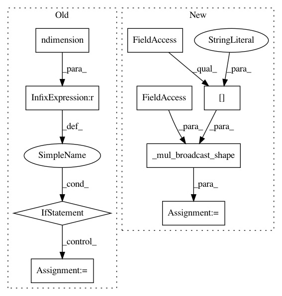

b0eecef1c8acdfe6e65f1e96ff6e26d2bc43e7db,gpytorch/lazy/diag_lazy_tensor.py,DiagLazyTensor,_quad_form_derivative,#DiagLazyTensor#Any#Any#,35
Before Change
def _quad_form_derivative(self, left_vecs, right_vecs):
res = left_vecs * right_vecs
if res.ndimension() > self._diag.ndimension():
res = res.sum(-1)
return (res,)
def _size(self):
if self._diag.ndimension() == 2:
After Change
def _quad_form_derivative(self, left_vecs, right_vecs):
res = left_vecs * right_vecs
batch_shape = _mul_broadcast_shape(self._batch_shape, res.shape[:-1])
if batch_shape != res.shape[:-1]:
res = res.expand(batch_shape + res.shape[-1:])
return (res,)
In pattern: SUPERPATTERN
Frequency: 3
Non-data size: 9
Instances
Project Name: cornellius-gp/gpytorch
Commit Name: b0eecef1c8acdfe6e65f1e96ff6e26d2bc43e7db
Time: 2018-11-09
Author: balandat@fb.com
File Name: gpytorch/lazy/diag_lazy_tensor.py
Class Name: DiagLazyTensor
Method Name: _quad_form_derivative
Project Name: cornellius-gp/gpytorch
Commit Name: 487ec4eacee294bf9ff630fc06db22fa19331b51
Time: 2019-04-11
Author: gpleiss@gmail.com
File Name: gpytorch/means/constant_mean_grad.py
Class Name: ConstantMeanGrad
Method Name: forward
Project Name: cornellius-gp/gpytorch
Commit Name: 5353ed4a85d28cfbf3aa78b0c177e7f6ba80b2a5
Time: 2019-04-12
Author: gpleiss@gmail.com
File Name: gpytorch/means/constant_mean_grad.py
Class Name: ConstantMeanGrad
Method Name: forward